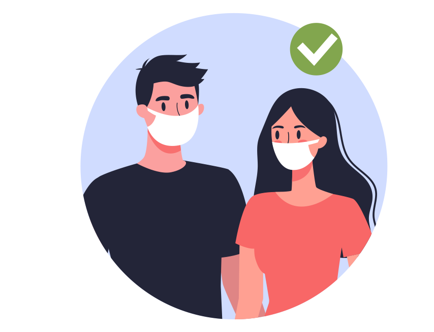
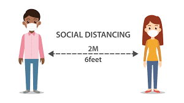

Réserver
Réservez où que vous soyez ! - Réservation facile, où que vous soyez ! En toute simplicité.

You must wear your mask


Réservez où que vous soyez ! - Réservation facile, où que vous soyez ! En toute simplicité.